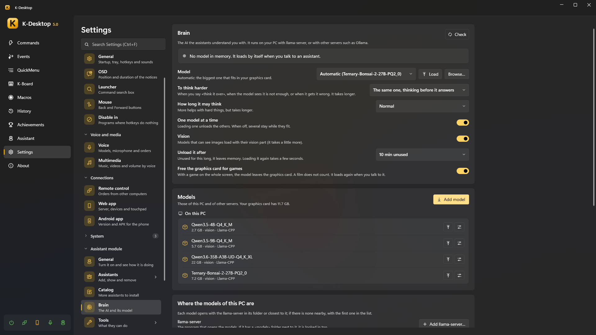

Brain (the AI)
The assistants understand you with an AI model. It runs on your PC with llama-server (from llama.cpp), or on
another server you already have, such as Ollama, llama-swap or LM Studio. Settings → Assistant → Brain.

Note
Without any model the assistants still work: fixed phrases (the time, timers, notes, «remember that…»), your commands and the rules for windows and programs need no AI. Choose No AI (only rules and your commands) to keep it that way.
Where the answer is worked out
The page tells you where what you say goes:
| On this PC | What you say never leaves the computer |
| On another computer of your network | What you say stays at home |
| On the internet | What you say leaves your network |
Models on this PC
- Where the models of this PC are → llama-server → Add llama-server…: the
llama-server.exethat opens the models. If it has amodelsfolder next to it, it is looked in too. With several, each model opens with the one in its folder or closest to it; otherwise with the usual one (Make it the usual one). - Folders with models: the
.gguffiles inside them are listed. One of them is where the ones you download go (Open, or move it elsewhere). - Add model: paste the link of a Hugging Face model or type its name (
unsloth/Qwen3.5-9B-GGUF, orunsloth/Qwen3.5-9B-GGUF:Q4_K_Mfor one quantization). Each file says whether it fits your graphics card, is tight or doesn't fit (it will be slow); the biggest one that fits is already chosen. Models that can see images offer their vision part too.
The Models list shows those of this PC and of the other servers, the one in memory in green, with Load, Free,
Delete and llama-server options for that model only (for example -c 32768 for more context).
Other servers
Other servers → Add: Ollama, or any server compatible with OpenAI (llama-swap, LM Studio…), on this PC or another, with its address and, only if it asks for one, an API key (stored encrypted for your user). Test says how many models it has. Their models show up in the same list.
Choosing the model
| Setting | |
|---|---|
| Model | Automatic: the biggest one that fits in your graphics card. Or a specific one, or No AI |
| To think harder | Used when you say «think it over», when the model sees it is not enough, or when you tell it it got it wrong. The same model (reasoning before it answers), another model, or Never. With another model, Reason before answering decides whether it reasons first or answers as it is (quicker) |
Both have Browse… (a .gguf from any folder) and Load when the chosen one is not in memory |
|
| How long it reasons when thinking harder | A little, normal, a lot (only when it reasons). More helps with hard things, but takes longer |
| Unload it after | Unused for this long, it leaves memory (or Never: only when you ask). Loading it again takes a few seconds |
| One model at a time | Loading one unloads the others. When off, several stay while they fit |
| Vision | Models that can see images load with their vision part (it takes a little more) |
| Free the graphics card for games | With a game on the whole screen, the model leaves the graphics card. A film does not count. It loads again when you talk to it |
Each assistant can think with its own model (its card → Basics → Thinks with, and its own one to think harder: Global, The same model or one of the list, with its box to reason or not, and how long it reasons). An assistant's package may suggest a model: the install card and its Basics tab offer to download it (never ticked by default), only if it fits and you do not have it.
Freeing the graphics card
The model is loaded by itself when you talk to an assistant, and while you are still saying the order. To take it out of memory:
- Free next to it, at the top of the page;
- say or write «free the brain» / «unload the model» (and «load the brain» to have it ready);
- the Assistant: brain action in a command or an event (before a game, a render…).
Thinking harder
Small models answer in a moment but can get a sum or a riddle wrong. Ask «think it over», «think it through» or «think carefully» (before or after the question), or tell it «that's wrong»: it thinks it over and checks. A big model may also decide to think harder on its own. It takes longer: up to half a minute.
Test the model
At the end of the page, Test the model gives the model a list of test orders and tells you how many it gets right and
how long it takes on average. Nothing is really run. Open the bench opens Assistant\bench.json, to write your own
orders.